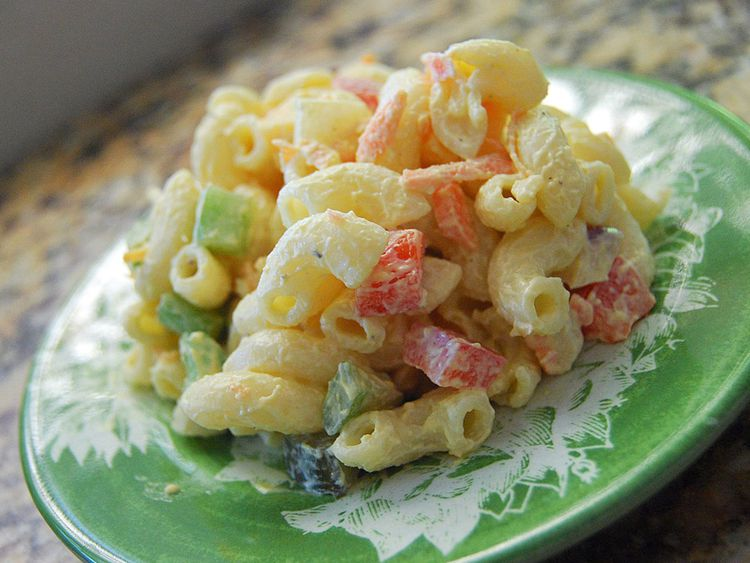

Macaroni Salad with Pickles

Description
This recipe is easily multiplied for a crowd. Everyone in my family asks me to bring this to our functions. I even make it for weddings.
Ingredients
- 1 (16 ounce) package macaroni
- 4 eggs
- 1 cup mayonnaise
- ½ cup sour cream
- 1 teaspoon salt, or to taste
- more Ingredients..
Steps
- Cook pasta in a large pot of boiling water until al dente. Drain; rinse with cold water. Set aside.
- Meanwhile, place eggs in a saucepan, and fill with enough cold water to cover eggs completely by about 1 inch. Bring water to a boil. Cover, remove from heat, and let eggs stand in hot water for 20 minutes. Immediately remove from hot water and cool in an ice water bath. When cool enough to handle, peel and chop eggs.
- In a medium bowl, mix together mayonnaise, sour cream, dry mustard, sweet pickle juice, and celery seed. Season with salt and black pepper.
- In a large bowl, combine drained pasta, celery, onion, olives, sweet pickles, carrots, green pepper, and chopped eggs. Stir in dressing, and mix well. Refrigerate before serving.
Home Page